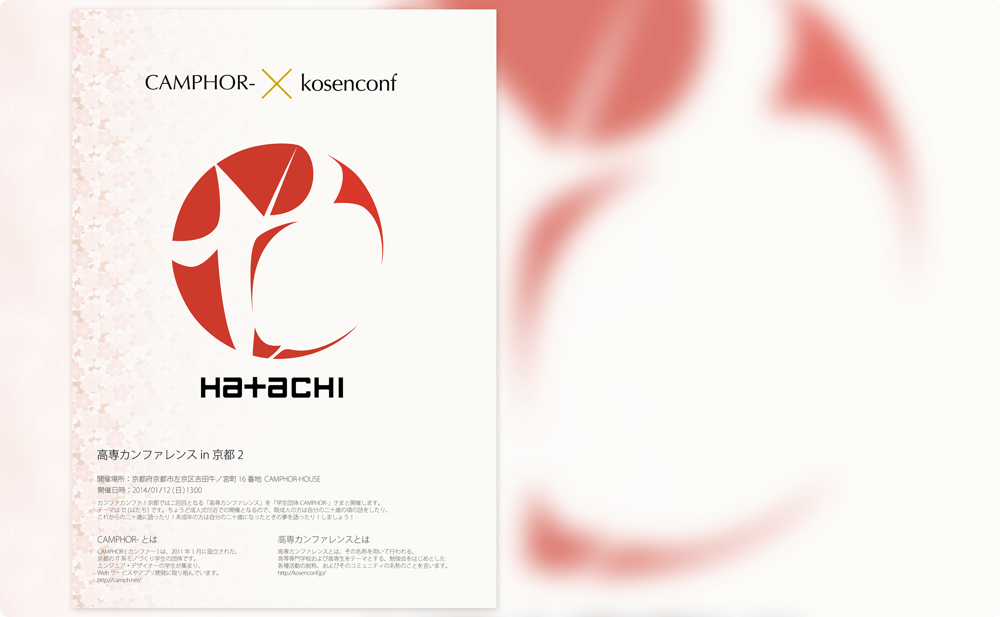

PRODUCT
高専カンファレンスin京都2
Poster
全国の高専生が集い、OBによる基調講演や現役生によるLightningTalkなどを行うカンファレンスイベント。
その京都開催にあたり作成したポスター。
開催テーマの"廿-hatachi-"に則り、不完全ながらも真の形に近づこうとする"円"と、1画足りない"廿"の文字を中心に添えた。
これは20歳で卒業し、新たな分野へ飛び込む高専生に対して、大人となるための最後の"1画"をこのカンファレンスで得て欲しいという思いが込められている。
高専カンファレンスin長岡2
Poster
全国の高専生が集い、OBによる基調講演や現役生によるLightningTalkなどを行うカンファレンスイベント。
その長岡開催にあたり作成したポスター。
開催副委員長として、カンファレンスの全体テーマやイベント進行を努めた。
開催テーマの"Wake Up Geek!"は、地域柄外との交流が少ない長岡高専の学生たちに「もっと外の世界に触れてほしい」「このカンファレンスをきっかけに新たな技術の扉を開いて欲しい」という思いが込められている。
kosendDJ部
Poster
高専生主催のDJイベント、「kosenDJ部」の第一回開催ポスター。
レコードをあしらったエレクトロチックなロゴに加えて、ヘッドホン女子高生の”虚像”が覗く。